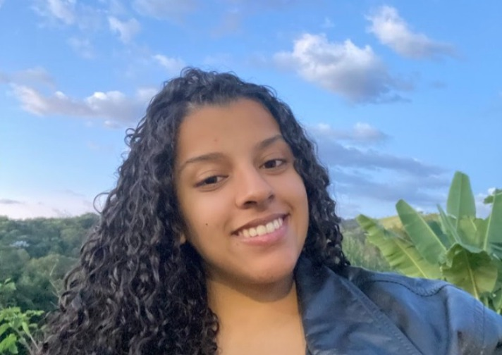

Cheetah H2 Racing
Projeto universitário de desenvolvimento de veículo tipo fórmula movido a hidrogênio verde. Atuação na análise da dinâmica veicular, contribuindo com estudos sobre suspensão, frenagem e estabilidade.
Bem vindo ao meu mundo!
Estudante de engenharia mecânica e trainee de vendas.

Olá! Meu nome é Lara Olinda, tenho 22 anos e sou estudante do sétimo período de Engenharia Mecânica na Universidade Federal de Itajubá (UNIFEI). Atualmente, atuo como trainee de vendas na byron solutions, empresa júnior de tecnologia da universidade, mas, longo da minha trajetória acadêmica, participei de diferentes projetos estudantis.
Sou uma pessoa comunicativa, curiosa e sempre disposta a aprender. Além da vida universitária, gosto de aproveitar meu tempo livre cozinhando, jogando, viajando e passando momentos com amigos e familiares. E, quando sobra um tempinho, também me dedico aos estudos — afinal, a vida universitária faz parte da rotina!
Neste site, você encontrará um pouco mais sobre minha trajetória, minhas experiências e as competências que venho desenvolvendo para me tornar uma profissional cada vez mais preparada para os desafios da engenharia.
Projeto universitário de desenvolvimento de veículo tipo fórmula movido a hidrogênio verde. Atuação na análise da dinâmica veicular, contribuindo com estudos sobre suspensão, frenagem e estabilidade.

Apoio à integração de calouros da universidade, com participação nas ações de comunicação e engajamento.

Atuação como bolsista da Pró-Reitoria de Extensão da UNIFEI em projeto institucional de documentação fotográfica do acervo do museu. Responsável pelo, registro fotográfico, apoio à catalogação e manutenção de banco de dados visual.